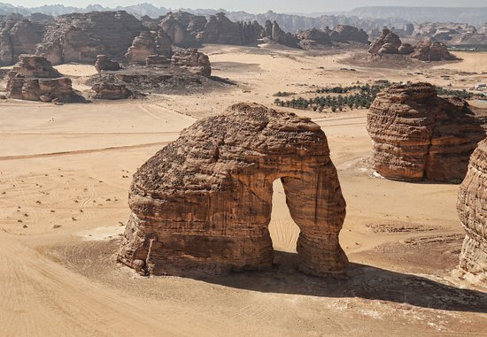

غراميل العلا
تتمثل غراميل العلا في تكوينات صخرية مذهلة
تحيط بها مجموعة من لآليْ مجرة درب التبانة العظيمة
تجذب غراميل مدينة العلا بالمدينة المنورة العديد من السياح اليها
للتمتع برؤية هذه الاجواء البديعة بها

مدائن صالح
مدائن صالح بمدينة العلا
هي عبارة عن منطقة سياحية وتراثية تاريخية هامة وعالمية
وهي من أبرز معالم السياحة في العلا التي يقصدها السياح
حيث أنها من أهم حواضر الأنباط و قوم عاد
المذكورين في القرآن الكريم
صخرة جبل الفيل
و هي عبارة عن صخرة ضخمة، على شكل فيل فريد من نوعه
اكتسب اسمه من هذا الشكل. يبلغ إرتفاع هذا الجبل العظيم حوالي 50 متراً
و هو من أبرز معالم السياحة في العلا الذي يقصده العديد من السياح
خاصة مُحبي الرياضة الصحراوية الممتعة، وتسلق الجبال العالية

جبل اثلب
جبل اثلب يُعد من الوجهات السياحة في العلا الهامة
ًالتي يقصدها السياح في منطقة العلا بالمدينة المنورة
فهو يوجد في قلب منطقة صحراوية طبيعية، و ظل شامخاً طوال هذه السنين
ويُحيط به مجموعة من الرمال الناعمة، والبيئة الصحراوية الطبيعية المُميزة
حرة عويرض
حرة عويرض بمنطقة العلا بالمدينة المنورة
عبارة عن صخرة بُركانية منصهرة
و هي ترتفع عن منطقة العلا بحوالي 600 قدم
و قد تم نحت درج على الجبل حتى قمته، لكي يتمكن السائح، من الصعود إلى الحرة
لمُشاهدة مدينة العلا من الأعلى، في مشهد جمالي يسحر العيون
منتجع برزان العلا
يُعتبر منتجع برزان العلا، أحد منتجعات السياحة في العلا الهامة
التي يقصدها السياح
فهو يعكس التراث الثقافي والشعبي لمدينة العلا المميزة
و يتيح هذا المنتجع للسياح تناول ألذ و أشهى المأكولات السعودية الشهيرة
كما يُمكن للسياح شراء المشغولات اليدوية، المصنوعة من جريد النخل، تذكاراً من هذه المدينة العريقة